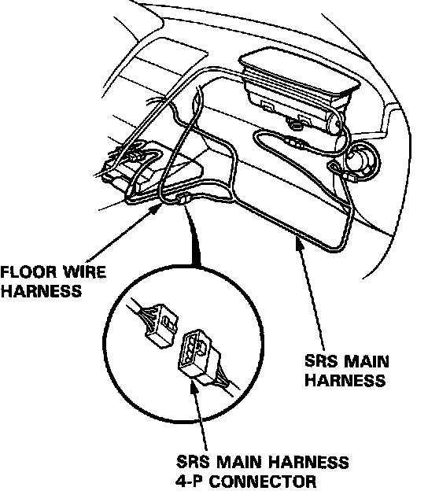
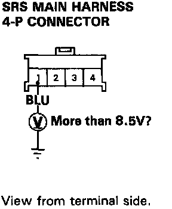
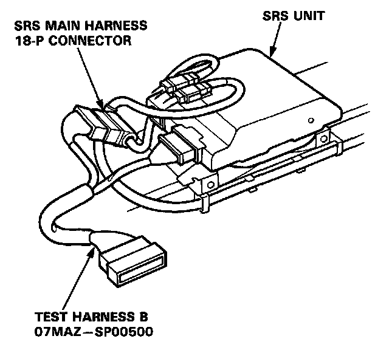
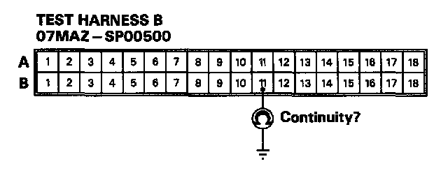
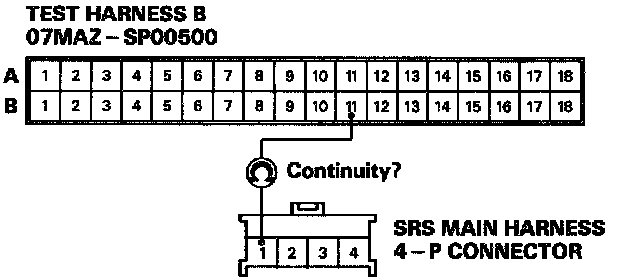
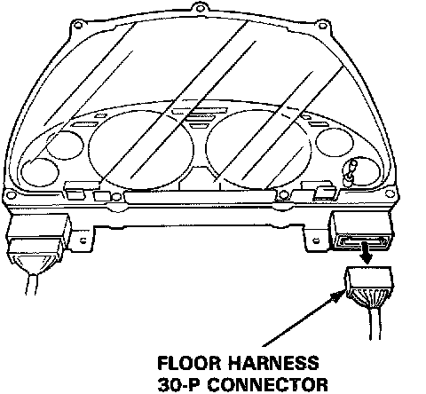
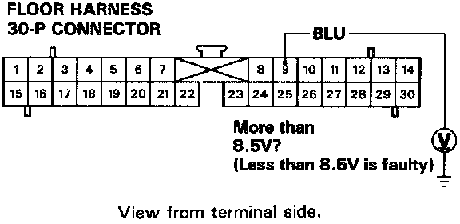

Mode J - Short or Open In SRS Indicator Wire Harness
MODE J: SHORT OR OPEN IN SRS INDICATOR WIRE HARNESS.1. Disconnect the SRS main harness 4-P connector from the floor wire harness.

2. Measure the voltage between the No. 1 terminal and body ground on the SRS main harness 4-P connector side, with the ignition switch ON.

- If voltage is more than 8.5 V, go to step 8.
- If voltage is less than 8.5 V, go to step 3.
3. Before disconnecting any part of the SRS wire harness, install the short connectors.

4. Connect Test Harness B (O7MAZ-SPOO5OO) between the SRS unit and the SRS main harness 18-P connector.

5. Reconnect the battery positive cable and negative cable.
6. Check for continuity between the B11 terminal and body ground.
- If there is continuity, the SRS main harness is shorted. Replace the SRS main harness and recheck the voltages.
- If there is no continuity, go to step 7.
7. Check for continuity between the Bli terminal of Test Harness B (O7MAZ-SP00500) and the No.1 terminal of the SRS main harness 4-P connector.

- If there is continuity, the SRS unit is faulty. Replace it and recheck the voltages.
- If there is no continuity, there is an open in the SRS main harness. Replace the SRS main harness and recheck the voltages.
8. Connect the SRS main harness 4-P connector to the floor wire harness. Disconnect the floor wire harness 30-P connector from the gauge assembly.

9. Turn the ignition switch ON and wait for six seconds. Measure the voltage between the No.9 terminal and body ground.

- If voltage is more than 8.5 V, the SRS indicator circuit is faulty (in the gauge assembly). Replace the gauge assembly and recheck the voltages.
- If voltage is less than 8.5 V, the floor wire harness is faulty. Replace it and recheck the voltages.